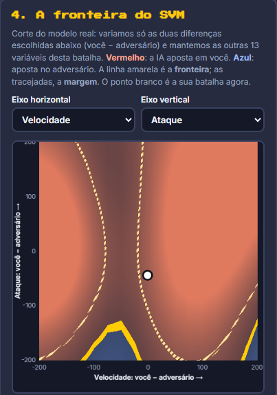

ARENA SVM
Uma IA consegue prever quem vence uma batalha Pokémon?
 VS
VS

Ensinamos um computador a apostar no favorito, e ele ainda explica
por que escolheu.
JOGUE ONLINE
arena-svm.onrender.com
Inteligência Artificial II · Ciência da Computação · FIB · 2026
O problema
Existem 1.242 Pokémon e mais de 770 mil confrontos possíveis. Antes de a batalha começar, dá para
saber quem leva vantagem?
Regras de bolso ajudam pouco
O mais rápido vence só 68% das vezes.
O mais forte (soma dos atributos), 81%.
Uma batalha depende de muita coisa ao mesmo tempo: velocidade, ataque, defesa, vantagem de tipo (água apaga
fogo) e os golpes que cada um sabe.
A nossa pergunta
Uma IA que estuda milhares de batalhas aprende a combinar tudo isso melhor do que as regras de bolso?
Spoiler: aprende. Acerta 92,6%, e o jeito como ela decide cabe em um desenho
(veja do outro lado).
Como a IA aprende
1
Exemplos. Um simulador com a fórmula de dano do jogo gerou
40 mil confrontos, cada um repetido 21 vezes. Vence quem ganhar a maioria.
2
Treino. A IA estuda as batalhas dos Pokémon das
gerações 1 a 6 e procura padrões.
3
Prova. Depois é testada com Pokémon das gerações 7 a 9,
que ela nunca viu. Nada de decorar resposta.
O que ela recebe
Só o que se sabe antes da luta: 15 informações por batalha, como a diferença de velocidade, de ataque, a
vantagem de tipo e a força do melhor golpe de cada lado.
Por que separar por geração?
Se a prova tivesse Pokémon do treino, a IA poderia só reconhecer rostos conhecidos. Separando, medimos se ela
aprendeu de verdade.
Dados: PokéAPI (atributos, tipos e golpes de 1.242 Pokémon).
Jogue agora!
arena-svm.onrender.com
Crie uma sala e mande o link ou o
QR Code da sala para um amigo entrar. A IA aposta e explica cada batalha.
Siga a gente
@arena.svm
Código, dados e experimentos:
github.com/GustavoVieira0/arena-svm
A ideia do SVM
Cada batalha vira um ponto. A técnica Máquina de Vetores de Suporte (SVM) traça a
rua mais larga possível entre as batalhas que um lado vence e as que o outro vence.
Uma batalha nova é classificada pelo lado da rua em que cai. Quanto mais longe da faixa amarela, mais segura
a aposta.
Vetores de suporte
Os pontos circulados, na beira da rua, são os únicos que definem a
decisão. Os outros podem até sumir.
E quando a rua não é reta?
Com o kernel RBF, o SVM curva a fronteira para
seguir os padrões dos dados.
O resultado
92,6%
de acerto no favorito, em batalhas entre Pokémon que a IA nunca tinha visto.
IA + golpes de cada Pokémon
E os outros algoritmos?
| SVM (RBF) | 92,6% |
| Regressão logística | 91,8% |
| KNN (k = 91) | 91,1% |
Descoberta: o que mais ajudou não foi trocar o algoritmo, e sim dar a informação certa: os golpes.
Ela ainda erra quando a sorte decide.
Cuidado com a escala
Sem padronizar os números, o KNN cai para 81,5% e o SVM para 90,4%: um atributo de valores grandes
“grita” mais que os outros.
O protótipo

Arena: dois jogadores escolhem seus Pokémon, a IA aposta no favorito e a batalha acontece na tela. Depois, ela
mostra por que apostou assim.

Laboratório: monte seu próprio personagem, mexa nos atributos e veja a
fronteira do SVM se mover ao vivo.
Quem fez
Alceu Ferreira dos Santos Neto
Anthony Gabriel Schirato Lourenço
Gustavo de Carvalho Vieira
Luan Carlos de Souza Ferreira
Lucas Miguel Moreno Rios
Disciplina de Inteligência Artificial II
Ciência da Computação
Faculdades Integradas de Bauru (FIB)
Prof. Ronaldo Cesar Dametto · 2026
Vale lembrar
As batalhas vêm de um simulador próprio, mais simples que o jogo real (sem
habilidades, itens ou troca de Pokémon). A IA aprende as regras desse simulador: ela não serve para prever partidas
competitivas.

Pokémon é marca registrada da Nintendo, Game Freak e Creatures. Projeto acadêmico, sem fins comerciais.